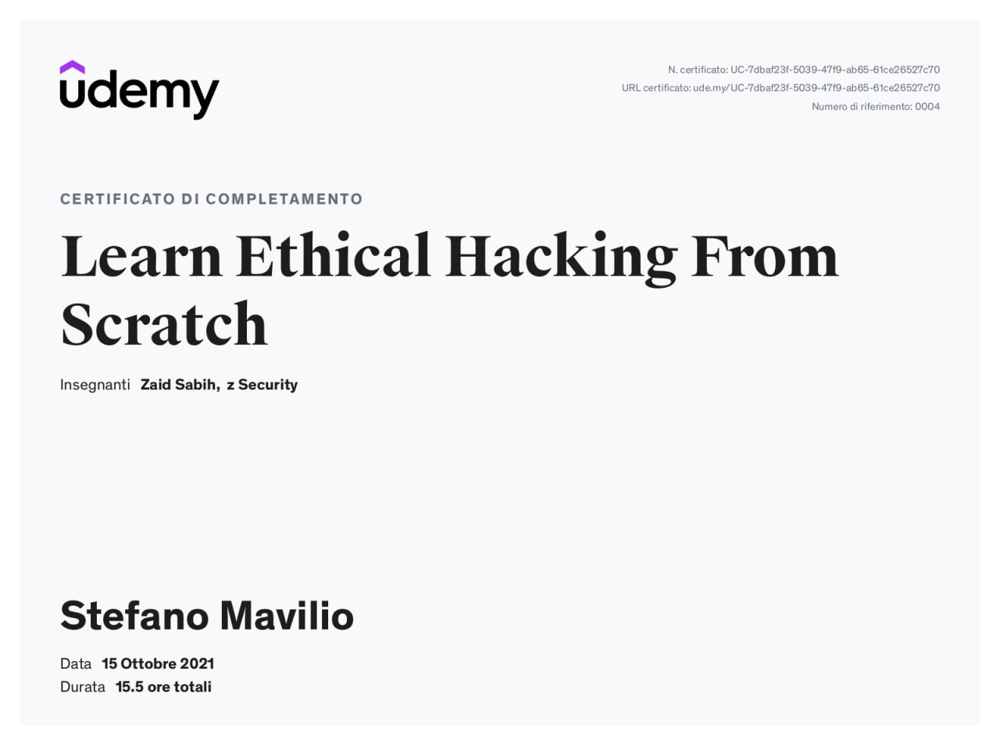
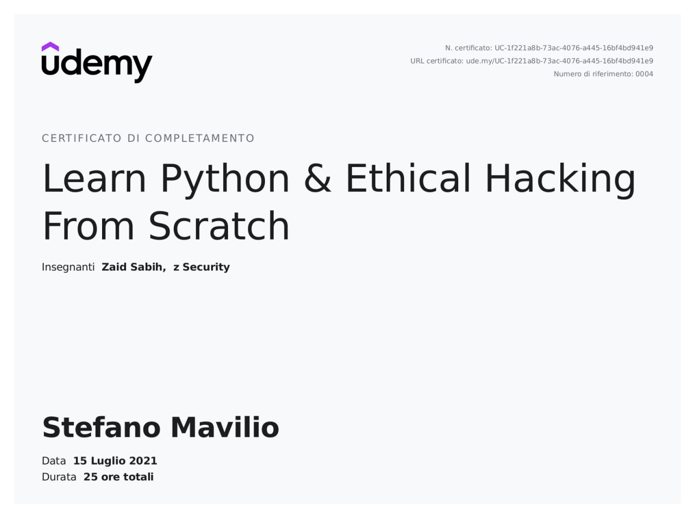
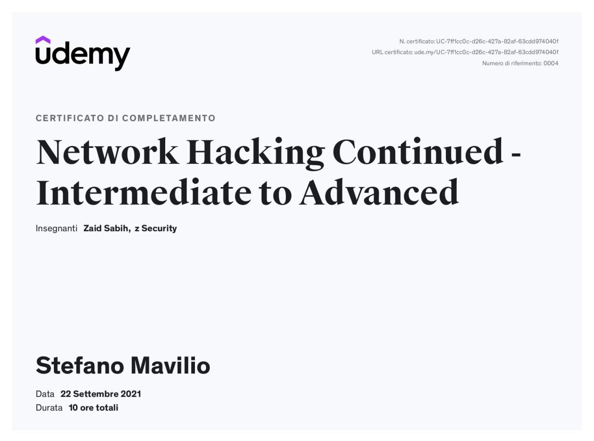
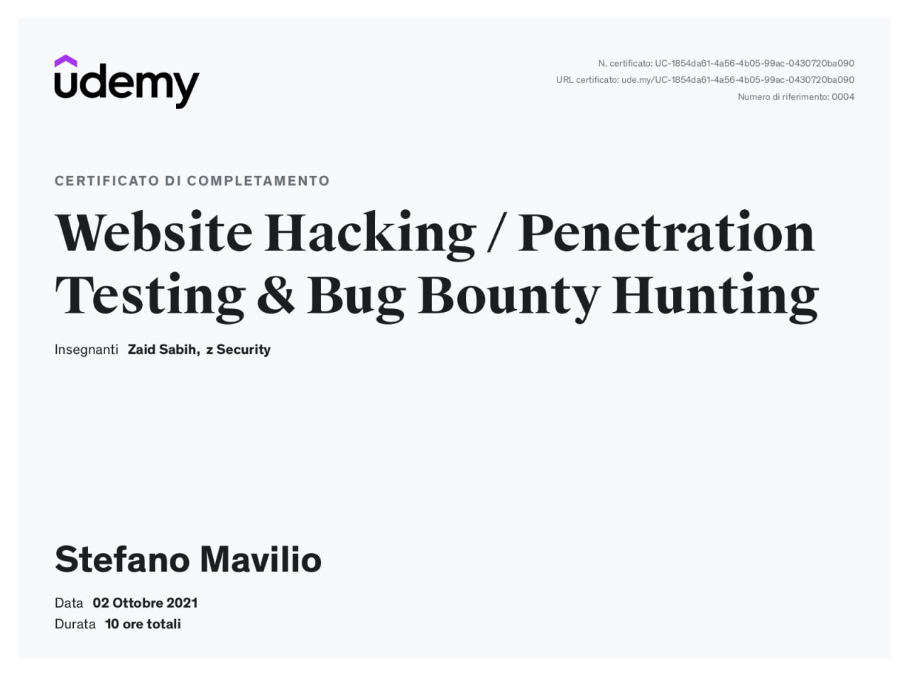
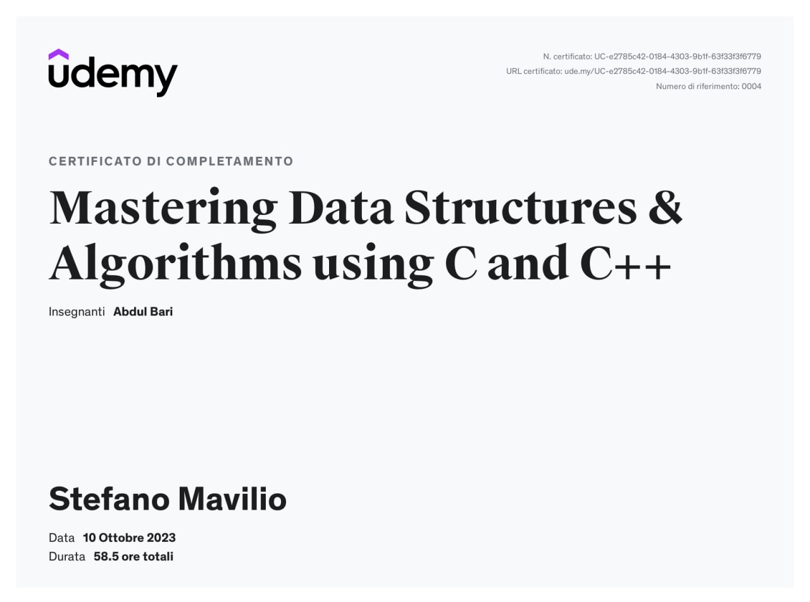
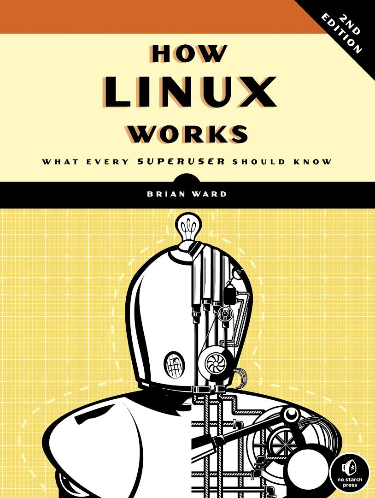

Stefano Walter Mavilio
Welcome to my digital lair
Step into my cyber realm where security meets innovation. Here you'll find a fusion of cybersecurity expertise, software development skills, and a passion for technological advancement.
About Me
I graduated from University of Milan with a three-year Bachelor's degree in System and Network Security, where I gained a solid foundation in computer science and cybersecurity. In my leisure time, I passionately engage in the development of mobile applications, websites, and games, demonstrating my ability to apply the theory learned to practical domains. I am passionate about cybersecurity, actively participating in CTF hacking challenges and performing penetration testing. This has allowed me to acquire advanced skills in computer system protection and vulnerability detection. My thirst for knowledge constantly drives me to learn and apply new technologies and strategies to enhance cybersecurity. Furthermore, my passion for automobiles, particularly Italian icons like Ferrari and Alfa Romeo, showcases my interest in innovation, design, and perfection—qualities that I bring to every endeavor. I am always on the lookout for opportunities to apply my computer skills and contribute to technological advancement.
Interests and skills
Projects
My Library
Video Courses

Learn Ethical Hacking from Scratch
This Ethical Hacking videocourse is designed for beginners, teaching practical hacking techniques and security measures. It covers various hacking fields, including network hacking, gaining access, post-exploitation, and website hacking, providing hands-on skills and understanding of vulnerabilities and defenses.

Learn Python & Ethical Hacking from Scratch
This videocourse covers Python programming and ethical hacking for beginners, guiding you from basic concepts to writing practical hacking programs while also teaching general programming skills. By the end, you'll have the ability to create various applications using Python, all with hands-on examples and a focus on real-world hacking techniques.

Network Hacking Continued - Intermediate to Advanced
This advanced network hacking videocourse is designed for those with prior knowledge in network hacking. It provides practical, in-depth training on pre-connection attacks, gaining access to various network configurations and encryptions, and post-connection attacks, all with a focus on understanding the theory and developing attack skills.

Website Hacking Penetration Testing & Bug Bounty Hunting
This website penetration testing videocourse is designed for beginners, providing practical training in discovering and exploiting common web application vulnerabilities. Covering information gathering, vulnerability discovery, exploitation, and post-exploitation, it equips students to hack websites like professionals and secure them effectively.
Complete Linux Training Course to Get Your Dream IT Job 2023
This Linux videocourse is ideal for beginners looking to start a career in Linux. Covering installation, configuration, administration, shell scripting, and more, it also includes resume and interview workshops, preparing students for Linux-related job opportunities and certifications.
Hacker Game - Sfide di Hacking per Aspiranti Hacker (IT)
This CTF videocourse guides you step by step through hacking challenges, providing both theory and hands-on practice in gaining access to virtual Windows and Linux machines. It is suitable for anyone in the IT field, aspiring ethical hackers, or individuals interested in hacking with some prior knowledge.

Mastering Algorithms & Data Structures using C & C++
This extensive videocourse thoroughly covers data structures, enhancing problem-solving skills through whiteboard explanations and practical coding, suitable for all levels. I loved how the instructor explained even the most challenging topics in a simple and straightforward manner, using numerous examples.
Books

How Linux Works
I just enjoyed it from the start! I really recommend it for someone who wants to deeply understand how Linux works at a low level. It's a good starting point! Obviously, you should be familiar with all the basics of Operating Systems.
Computer Networks
"Computer Networks (6th Edition)" by Andrew Tanenbaum and David Wetherall provides a comprehensive introduction to networking concepts, protocols, and technologies. It covers both theoretical foundations and practical applications, with updated content on modern networking challenges.
Nmap Network Scanning
"Nmap Network Scanning" by Gordon "Fyodor" Lyon is a detailed guide to the Nmap security scanner, covering its use for network discovery, security auditing, and vulnerability detection. The book includes practical examples, advanced techniques, and insights from the tool's creator.